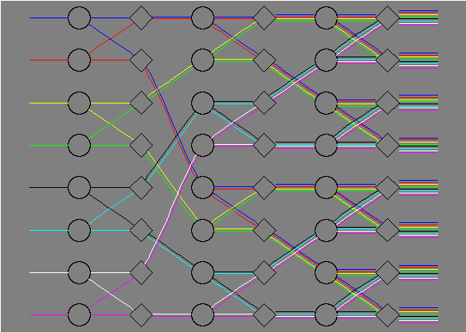

| Switch Network | |
|---|---|
A non-blocking switch network consisting of only 2-way splitters and selectors. This graph was created to illustrate the parallel edge feature.
|
|
|

Click on the picture to view the dot file |
|
[ Back to Graphviz: Home Page | Gallery ]
Copyright © 1996-2004 AT&T. All rights reserved.